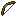

| Name | Summary | Incompatible With | Max Level | Primary Items | Secondary Items | Weight |
|---|---|---|---|---|---|---|
| Bomber | Shoots TNT instead of arrows. | Ender Bow, Ghast | III |  |
1 | |
| Confusing Arrows | Applies Nausea effect on arrows. | Bomber, Ender Bow, Ghast | III | 10 | ||
| Darkness Arrows | Applies Darkness effect on arrows. | Bomber, Ender Bow, Ghast | III | 10 | ||
| Dragonfire Arrows | Applies Dragons Breath effect on arrows. | Bomber, Ender Bow, Ghast | III | 2 | ||
| Electrified Arrows | Summons Lightning on hit. | Bomber, Ender Bow, Ghast | III | 5 | ||
| Ender Bow | Shoots Ender Pearls instead of arrows. | Bomber, Ghast | I |  |
 |
1 |
| Explosive Arrows | Arrows Explodes on hit. | Bomber, Ender Bow, Ghast | III | |
|
5 |
| Flare | Places a Torch where arrow land. | Bomber, Ender Bow, Ghast | I | |
|
5 |
| Ghast | Shoots Fireball instead of arrows. | Bomber, Ender Bow | I | |
|
1 |
| Hover | Applies Levitation effect on arrows. | Bomber, Ender Bow, Ghast | III | |
|
10 |
| Lingering | Arrows with a lingering effect on hit. | Bomber, Ender Bow, Ghast | III | |
|
2 |
| Poisoned Arrows | Applies Poison effect on arrows. | Bomber, Ender Bow, Ghast | III | |
|
5 |
| Sniper | Increases projectile speed. | II | |
|
10 | |
| Vampiric Arrows | Restores health on hit. | Bomber, Ender Bow, Ghast | III | |
|
2 |
| Withered Arrows | Applies Wither effect on arrows. | Bomber, Ender Bow, Ghast | III | |
|
5 |